Back to Home
Lab 3
22/January/2026
What I Learned
Storyboarding for Games
In this lab, I practiced making storyboards for games. This exercise helped me understanding how to break down a scene into specific "beats" and illustrate the main ideas to convey an overall message.
Critiquing Another Storyboard
I was able to analyze a classmate's storyboards and critique them. This gave me the opportunity to see what things were conveyed clearly and how my approach would have differed.
Updating a website
I got the opportunity to practice updating a website by adding a new page to it.
Storyboard for Pokemon Encounter
Storyboard for Uncharted Train Escape
 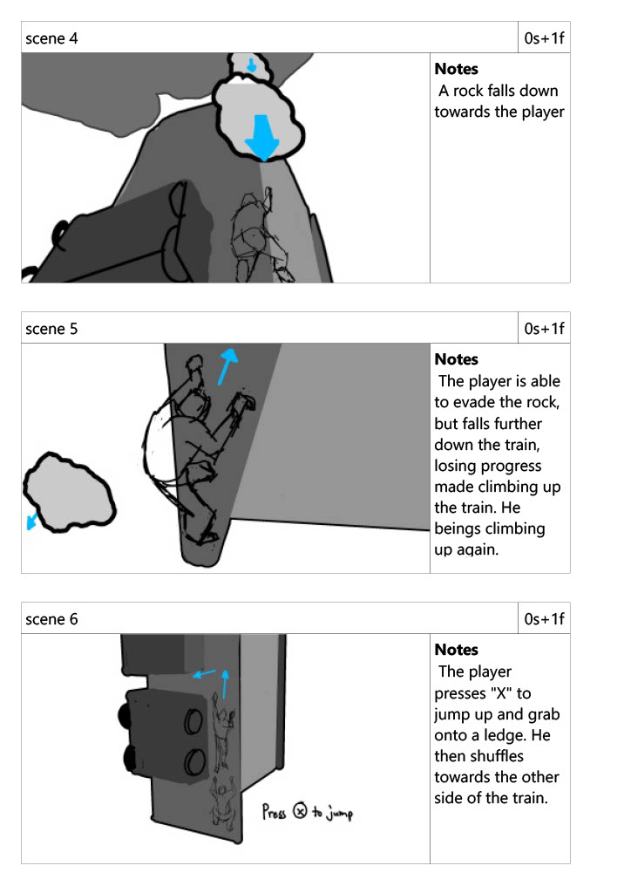
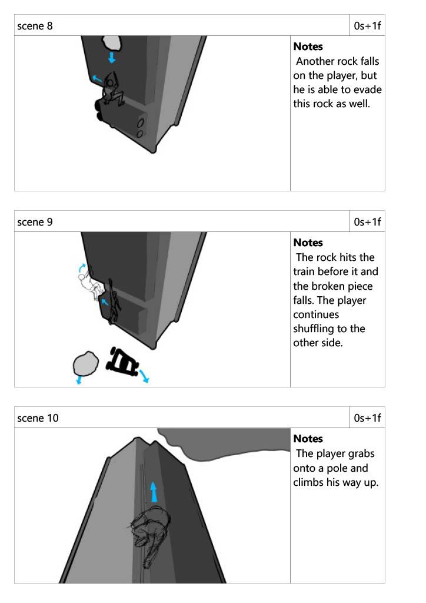
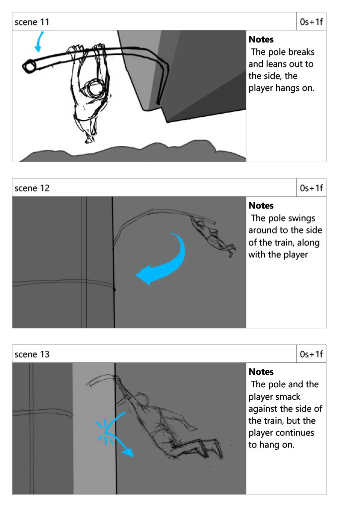
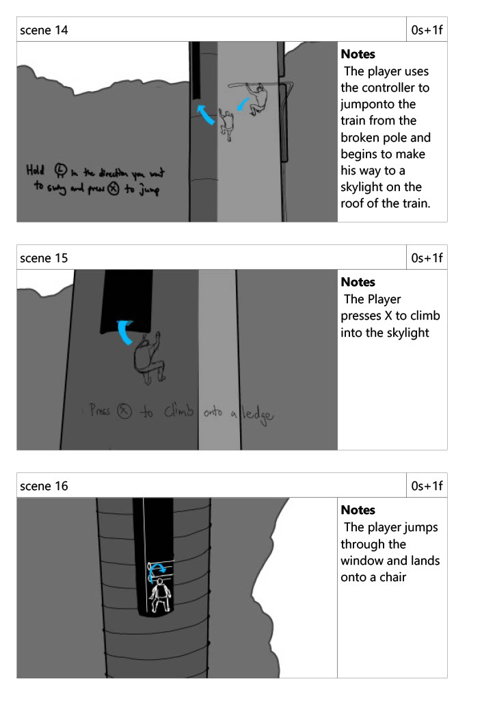
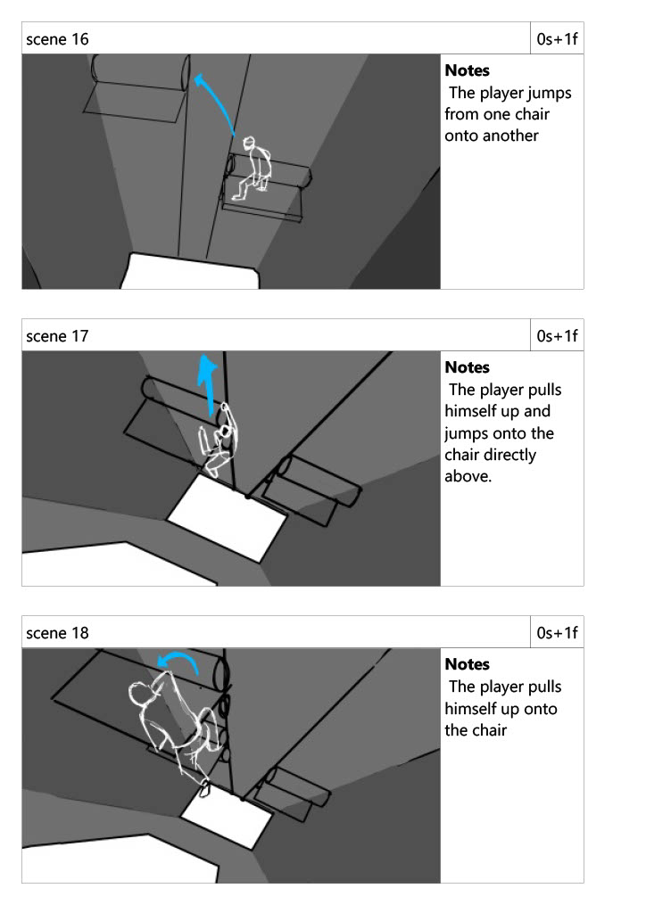
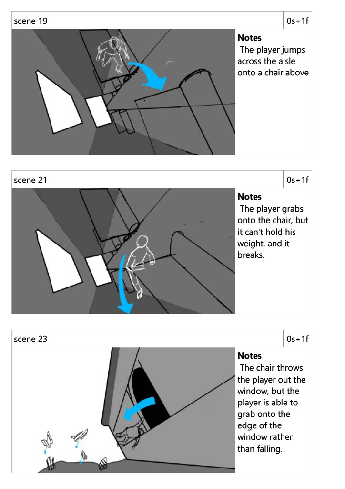
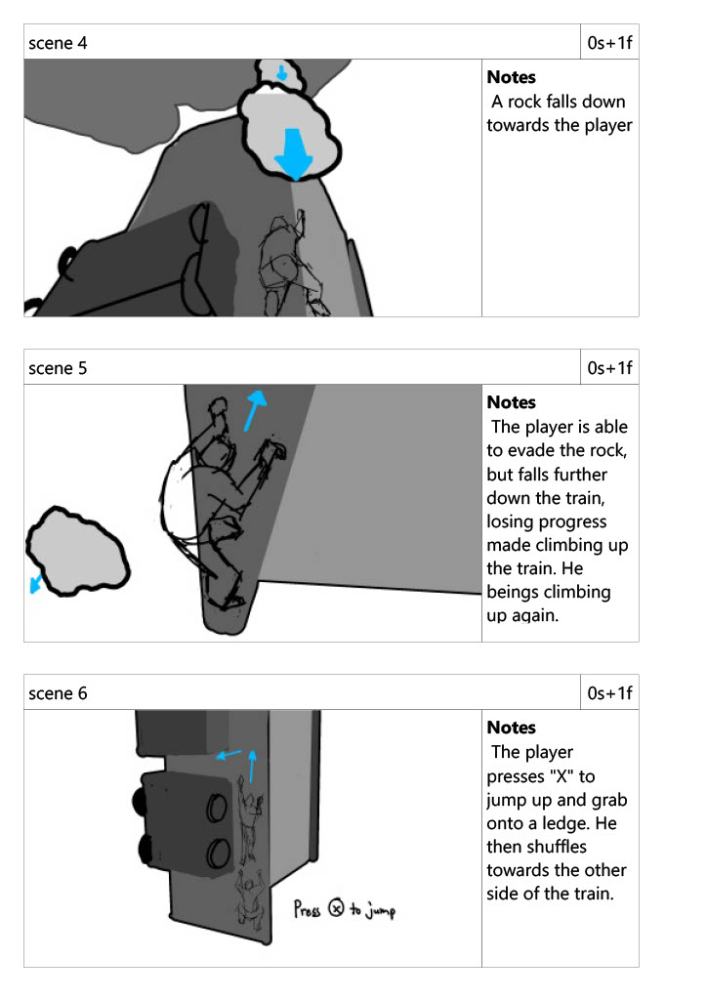
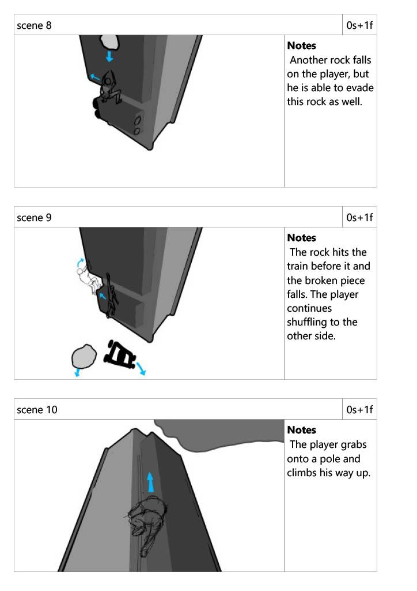
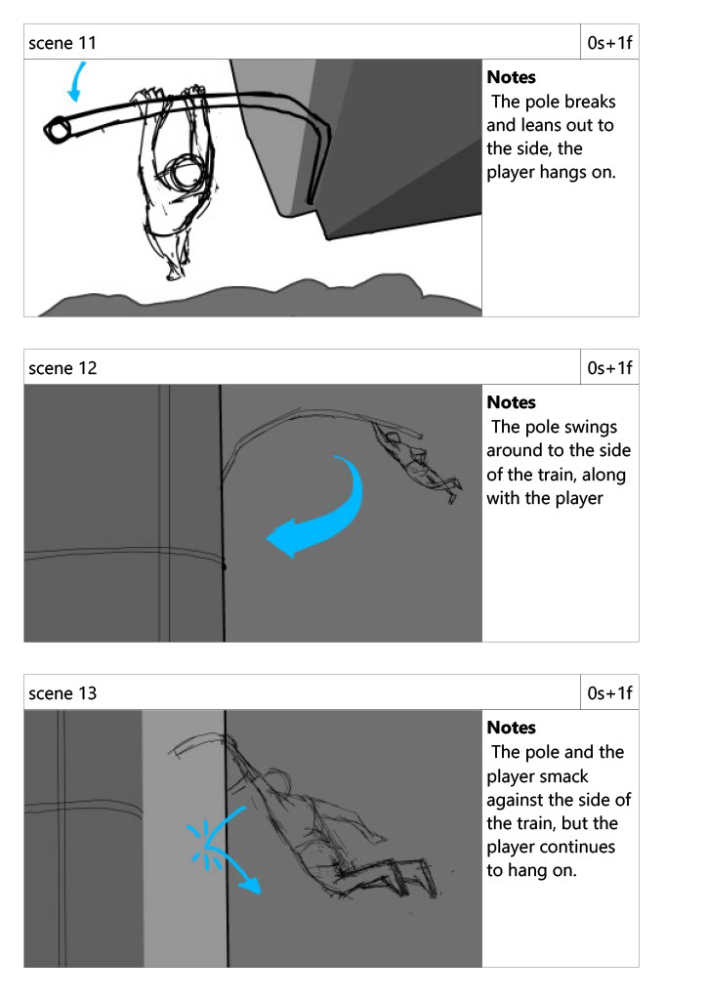
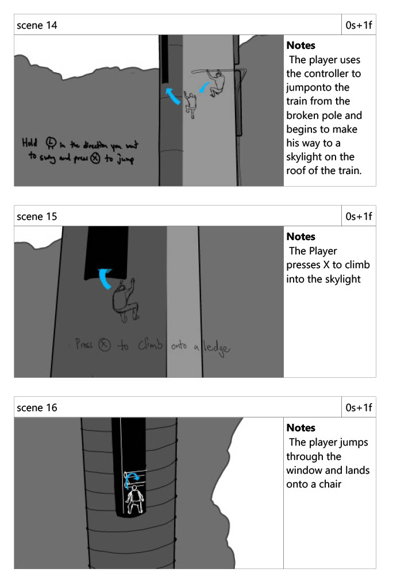
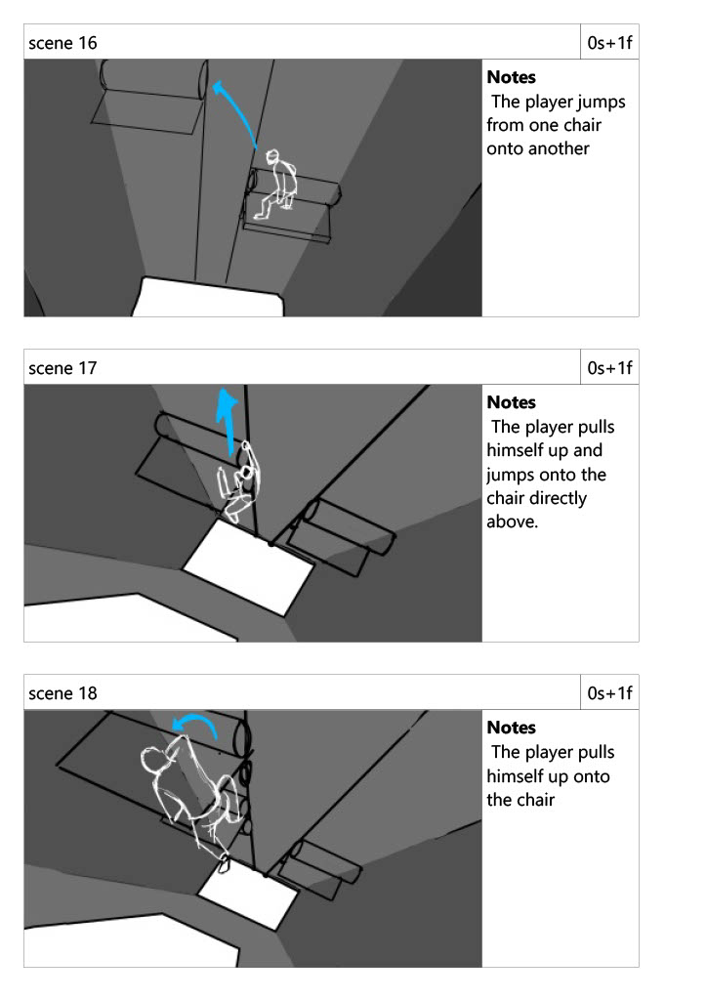
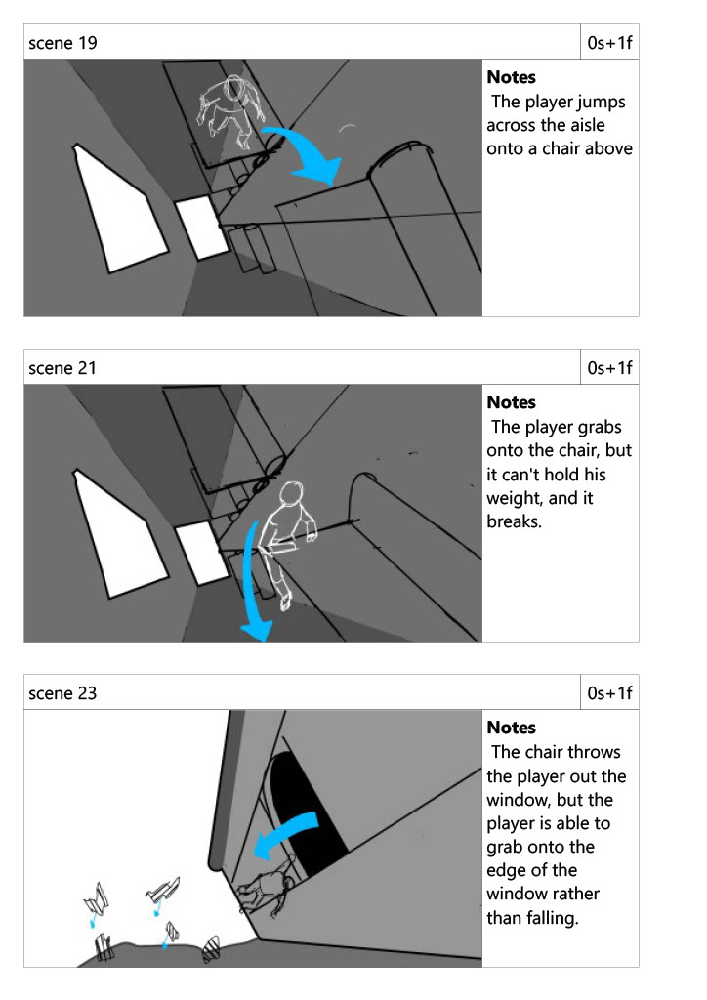
Reflection
For this week's exercise, we were practicing storyboarding for video games. We were given two videos to retroactively storyboard:
Figuring out the main ideas for each sequence was easy and challenging at the same time. Knowing what was important to keep and what could be omitted from the final storyboard was sometimes difficult to perceive. A lot of times, I would see something happen in the video, and I would wonder if that was something that I would need to draw a new frame for, or if I could get away with simply using an arrow to imply meaning. A lot of times, when I write something, I've learned to explain things very thoroughly and detailed, so that the reader won't miss any details, but I've come to learn that I need to approach storyboarding differently. I need to assume the viewer can make inferences on their own based on the context. In this way, I can use a few arrows to imply movement of a character without actually having to draw out the frames.
In the same vein, I also found that using the text to supplement the story progression helped to fill in the gaps. In previous attempts at storyboarding, I would go into detail about how a shot should be composed, where the camera should be, how transitions would occur. My text captions for each shot in the storyboard would be paragraphs long. But in this exercise, I tried to attempt a more narrative style. I tried to use the text to explain what the character in the scene was doing or what was happening to the character. Everything else would be explained (or inferred) from the accompanying image.
Part of the assignment was to critique a classmate's storyboards as well:
Classmate's Storyboard
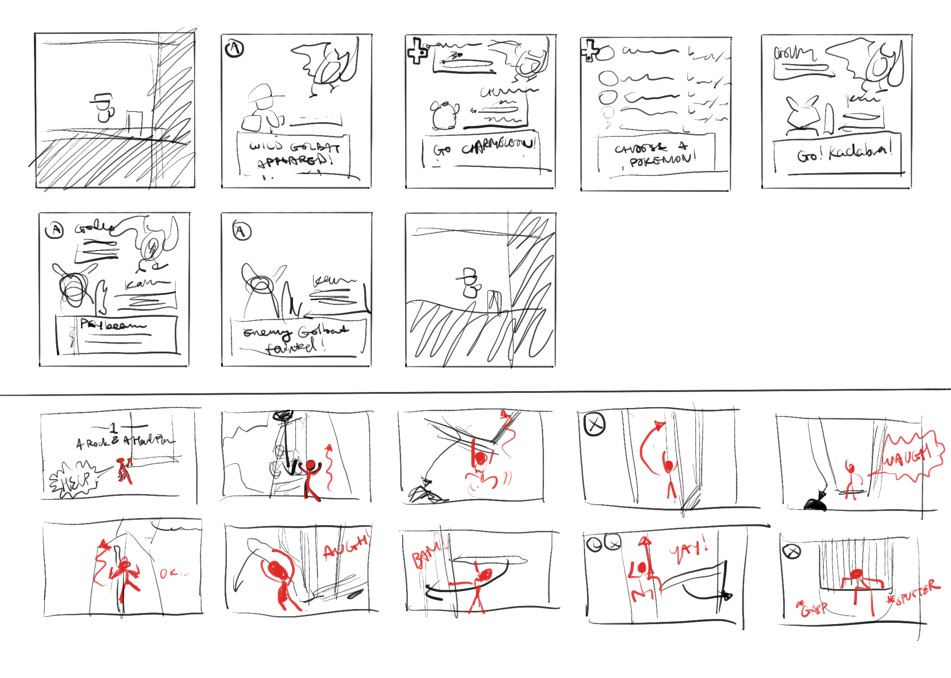Classmate's Name:
Raymond
What did your partner do differently from your storyboards?
Raymond's storyboard was more concise and showed the most essential beats of the story. In the Pokemon encounter, each shot showed a different screen layout, each of which was either a "leading" screen or a "resting" screen. By that, I mean that only shots that showed either the player being "led" into an interaction or shots that "rested" on a layout, waiting for the player to interact with choices were shown. The conciseness of this way was effective in that it didn't need to get bogged down with the details. It only focusses on the bare essentials that are necessary to get the point across. In my attempt, I attempted to include more details, such as transitions and specific button presses that the user would have to do. This style would be more effective in depicting the user experience. Raymond's style is effective at conveying the general progression of the sequence.
Did the differences enhance the storyboards, or make it more difficult to interpret the intended actions?
I think this question can have different answers depending on what the function of the storyboard is for. If it is to give a complete breakdown of user experience, then I think more work could have been done to explain how the user interacts with the game to lead them through the sequence. However, if the storyboard functions to provide a synopsis of the story sequence, then this gets to the essentials of it: a character is walking and encounters a wild Golbat. They release their Charmeleon, and then decide to switch their pokemon. They attack the Golbat and cause it to faint. The player goes back to exploring. This is the basic story, and I think this sequence conveys it well enough with the least amount of frames.
What, if anything, would you change about your storyboards, considering the differences in your partner's work?
I think I spent a lot of time and effort going into the details of each event that occured in the sequence, which could be beneficial in some aspects, but I think I would have liked to have a more succinct storyboard like Raymond's, in a way. I think I should have spent more time deciding if a frame could have been omitted from the final storyboard. Instead, I just drew what I saw, but I think that lacks a level of comprehesion when it comes to summarizing the main events that occured in the videos.
Based on the lecture and your exploration during the lab, how would you differentiate the previsualization process for linear and non-linear media? What are the similarities, and what distinguishes the two?
For linear media (i.e. animations, film, etc.), storyboards are dedicated more to summarizing the sequence of events. How did the character get from point A to point B? For non-linear media (i.e. video games), storyboards are dedicated more to documenting the user's experience as they interact with the sequence of events. How does the player get the character from point A to point B? In this way, the storyboarding process for non-linear media requires additional information to account for the added dimension of the person interacting with and controlling the choices for the sequence.